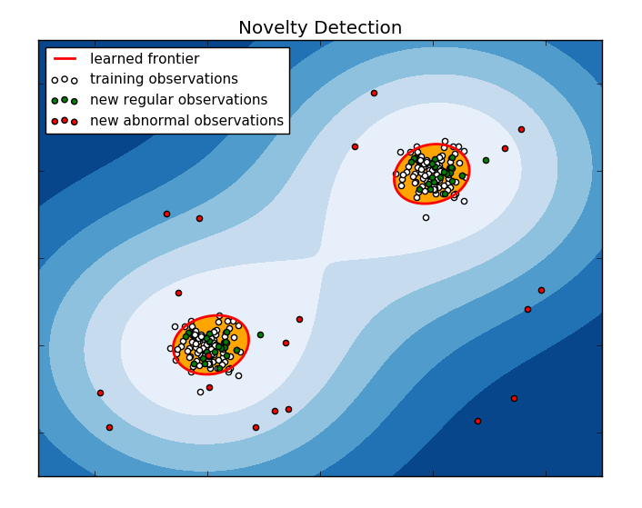

In order to ensure a high correlation between what was asked of us and what we will deliver, we decided to take a methodic approach to solving the problem we were confronted with. Our implementation follows the CRISP-DM ‘99, which is a data mining process model widely used in the industry to identify business uses for collected data.
The reasoning that led to our algorithm and platform choices follows a hidden-in-plain-sight idea. We were asked to devise an “effortless” way for our users to log in. We then thought that the most straightforward way for them to do so was to not enter their credentials at all.
The next conclusion was that we need to find a way to gather relevant information about the user that would allow us to learn their behaviour. Following that we started thinking of how we can make sense of the data, such that we are certain that we allow the right actor to log in our system.
This phase consisted of observing the behaviour of people that use mobile banking apps and determining what characteristics were prevalent. The most reasonable parameters of a login action were considered to be:
| Time | Day of the week | Location |
|---|---|---|
Data quality is not a problem in our case, because we do some preprocessing before we store it. Namely, the time and day of week are read, formatted and sent by the app. Ideally these would be stored by the event server upon receiving the POST request, but for the purpose of demonstrating the functionality we assigned this responsibility to the mobile app. Also we will not store any entries that do not contain all the information, such as when the location services are turned off.
Proper preprocessing is standard for PredictionIO’s DASE architecture, and it is being carried out in concordance with the recommended practices for our chosen algorithm. We are currently normalising the data with the formula
in order to ensure that every feature has mean 0 and unit variance. The main advantage of scaling is to avoid attributes in greater numeric ranges dominating those in smaller numeric ranges. Another advantage is to avoid numerical difficulties during the calculation. The scaling parameters are stored and used on the training data when the query is being sent.
The day characteristic is a categorical feature. By testing we have discovered that we are better of if we encode it as 7 binary features, instead of just one, and it results in more stable results.
We have also identified this as the stage where multi-tenancy could be implemented in the future, as the server that we are using does not support this as of the current version. More details are available in the [Further developments] section.
SVMs (Support Vector Machines) are a data classification technique that can be used for various use cases and that are effective even when the number of dimensions are higher than the number of sample points (training data). Another advantage is that the they use a subset of training points (support vectors) in the decision function, so they are memory efficient.
Typically, the SVM algorithm is given a set of training examples labeled as belonging to one of two classes. The SVM constructs a hyper-plane or set of hyper-planes in a high or infinite dimensional space, which can be used for classification, regression or other tasks. Intuitively, a good separation is achieved by the hyper-plane that has the largest distance to the nearest training data points of any class (so-called functional margin), since in general the larger the margin the lower the generalization error of the classifier. New examples are mapped into that same space and predicted to belong to one category or another, based on which side of the gap they fall on.
Because we store only the characteristics of successful logins, our data is said to belong to only one class, and the algorithm that we need must be a form of supervised learning. Therefore, in one-class SVM, the novelty detector (we called it “anomaly detector”) creates a model of existing entries, or “events”, and checks whether the test data novelty belongs to acceptable boundaries according to some predefined parameters. If it is too different, it is labeled out-of-class and it won’t be accepted as a legitimate login.
The SVM method by Schölkopf[1] et al. is marginally different to the original SVM formulation:
where the nu parameter replaces C in controlling the upper bound of the number of outliers (training examples regarded out-of-class). The engine’s API makes it easy to tweak this value,
among others. The non-linearity of the decision boundary is achieved by using the Gaussian kernel (also knows as the Radial Basis Function, or RBF), as the decision function:
We have manually constructed a training set (~50 data points) because we needed to include events that formed a predictable boundary. We successfully tested the model with queries that were expected to yield both positive and negative results. At this point we have reevaluated the engine’s DASE implementation to ensure that the business objective is achieved. To ensure that the positive predictions do not represent a security issue for the user we have compared our method to several other Novelty detection approaches and concluded that our choice achieves the best fit to the training data.
Following testing, we have successfully deployed the algorithm on IBM’s Bluemix platform in the form of a Docker container. It is now integrated with the mobile app in terms of both collecting data and receiving queries for prediction. Training with new events is scheduled every day at 0:00 AM server time in order for the model to reflect the most recent user entries.
[1] Schölkopf, R.C. Williamson, A.J. Smola, J. Shawe-Taylor, and J. Platt. Support vector method for novelty detection. in Advances in Neural Information Processing Systems 12: Proceedings of the 1999 Conference, Sara A. Solla, Todd K. Leen and Klaus-Robert Muller eds., 2000.